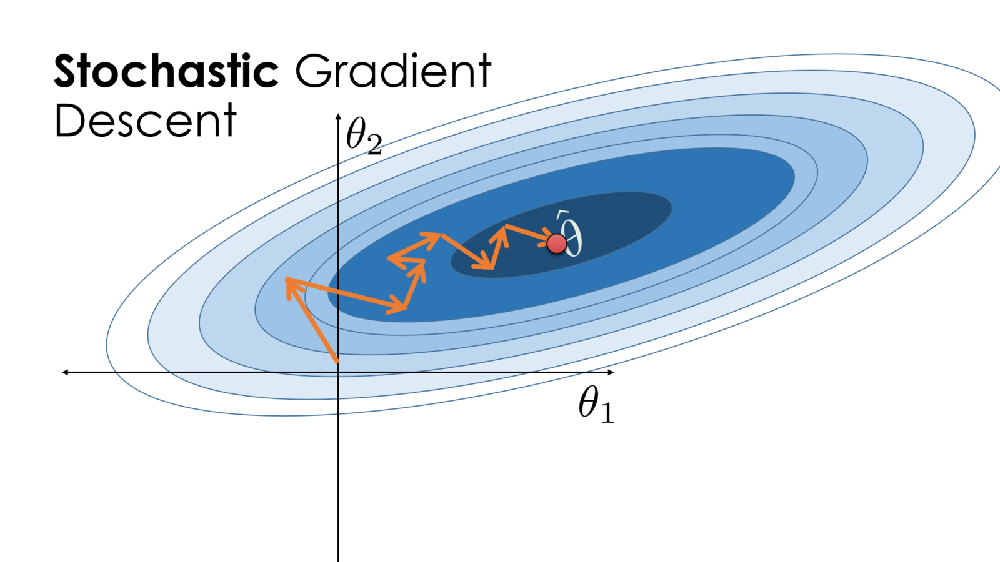
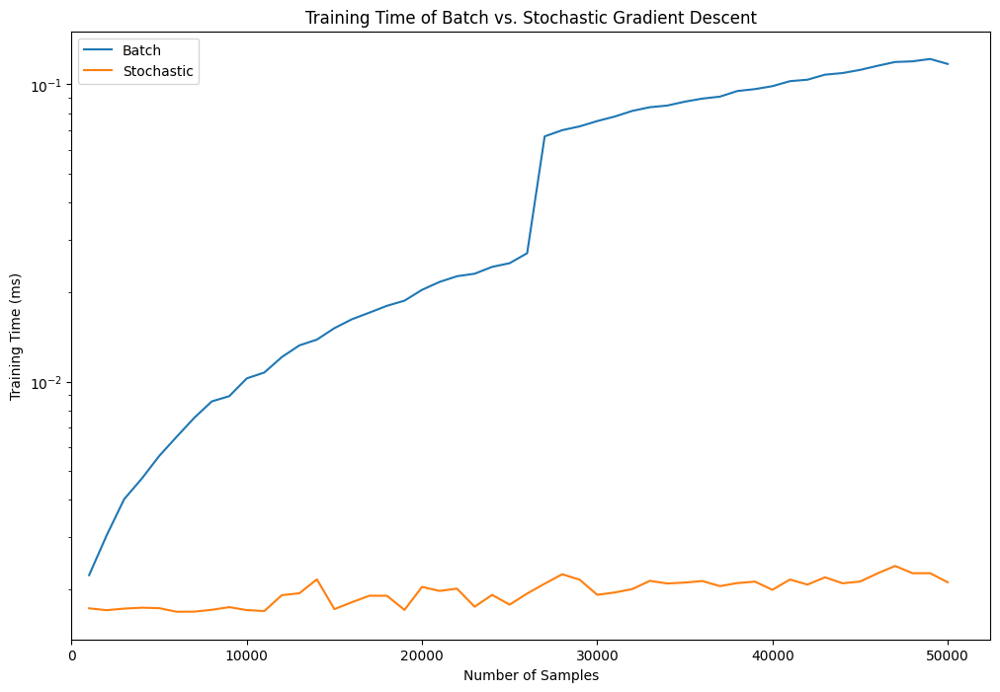

Gradient descent is one of the most fundamental tools in data science, as it opens the door to models that don’t have a closed-form solution. Even more, it sets the foundation for more complex optimization algorithms like momentum and Adam.
An issue that arises with gradient descent is the time it takes to calculate the gradients for larger datasets. In such cases, we may look to algorithms like stochastic gradient descent to speed up the training. Effectively, we are sacrificing some accuracy in the direction of the gradient for faster calculation time of the gradients.
One question that comes to mind for me: Is stochastic gradient descent worth the tradeoff of speed for randomness? How much better does it perform?
Let’s test this ourselves. We can use the standard Iris dataset, with some additional modifications that we’ll get to in later sections.
Setup
To start, we’ll import the needed modules and load the dataset:
# Load modulesfrom __future__ import annotationsimport timeimport pandas as pdimport numpy as npimport matplotlib.pyplot as pltimport seaborn as sns# Setup type hintsfrom typing import Optionalfrom numpy.typing import NDArray# Load datadf = sns.load_dataset('iris')df.info()df.head(5)
To make the experiment cleaner, I am going to make a few changes to the dataset. As a good general practice, I like to create helper functions for each step of my data preparation. This helps with debugging and makes the whole process much smoother, plus we can create a data preparation workflow and apply all steps at once.
First, I want to apply standard scaling. This is typical, but will improve the speed of our training – no need to put any further odds against us. This is done by effectively converting our raw data into z-scores:
Next, I want to use one-hot encoding on the output labels. This means our model will be a “setosa predictor”, as opposed to a predictor for all 3 species.
Finally, I wan to apply bootstrap resampling on the whole dataset. The standard Iris dataset only has 150 samples, which is trivially fast to compute the gradient. To make the impact of gradient calculations clearer, I’ll use bootstrap resampling to expand our dataset to a new size of 100,000.
This function has a huge benefit: If we used linear regression to model probabilities, we may end up with probabilities like \(p = 527.68\) or \(p = -1\), since linear regression puts no limit on the bounds of the output. If we pass the linear model through the sigmoid function, however, we can ensure that all output values are between 0 and 1, which we can then interpret as a probability.
To keep our classification model simple, we will use a Linear Regression model, which builds on the linear regression model by passing it though the sigmoid function. More precisely:
\[
p(y = 1 | x) = \sigma ( x^T \theta )
\]
where \(p(y = 1 | x)\) is the probability of class 1 given the input features \(x\), and \(\theta\) is the vector of coefficients.
Note that the coefficients also includes a bias (intercept) term as the first element, so we typically pad matrix \(X\) with ones in the first column, allowing us to simply perform matrix multiplication to get our predictions.
While linear regression can be performed using a single, closed-form expression, we aren’t as lucky with many other machine learning models. The best case is using an iterative training approach like gradient descent.
We start by initializing a random vector for \(\theta\), then update iteratively:
Where \(\tau\) is the step index, \(\theta^{(\tau)}\) is the coefficient vector at step \(\tau\), and \(\eta\) is the learning rate. While we have the option to make \(\eta\) a function of \(\tau\)–i.e. allowing larger or smaller steps at each iteration–we will keep it constant here for simplicity.
Note
The standard version of gradient descent is also called “batch” gradient descent. This naming is a little confusing, as it seems to imply that the gradient is calculated in batches, when it is actually calculated for all samples at once. A better way to think of this naming is that the gradient is calculated in a single “batch” for each iteration.
def batch_gradient_descent( X: NDArray, y: NDArray, epochs: int, learning_rate: float=0.05,) ->tuple[NDArray, NDArray]:''' Perform batch gradient descent over a given number of epochs. Parameters ---------- X : NDArray Input features, shape `(n, d)` y : NDArray Output labels, shape `(n, 1)` epochs : int The number of training epochs to perform. learning_rate : float, default: 0.05 The learning rate to use for gradient descent. Returns ------- theta : NDArray The bias and coefficients, shape `(d + 1,)` losses : NDArray The history of training losses ''' theta = np.random.random(size=(X.shape[1] +1,)) losses = np.zeros((epochs, ))for epoch inrange(epochs): p = predict(X, theta) losses[epoch] = cross_entropy(y, p) grad = gradient(X, y, p) theta = theta - learning_rate * gradreturn theta, losses

Stochastic Gradient Descent
As is our objective to test, there are often situations where calculating the entire \(\nabla L(\theta)\) isn’t practical due to the time it takes to calculate. In these cases, we can use a modified version of gradient descent called stochastic gradient descent. Instead of using the entire training set to calculate the gradient, we take a smaller batch of samples and use those instead.
If we define an indexing set \(\mathbb{I} = \{ 1, 2, \dots, n \}\), then we can take a batch of samples \(B \subset \mathbb{I}\), where \(\left| B \right| < n\). Our gradient equation then becomes:
def get_batched_data( X: NDArray, y: NDArray, size: int) ->tuple[NDArray, NDArray]:''' Parameters ---------- X : NDArray The input features, shape: `(n, d)` y : NDArray The output labels, shape: `(n, )` size : int The batch size ''' full_indexes = np.arange(X.shape[0]) batch_indexes = np.random.choice(full_indexes, size=size)return X[batch_indexes], y[batch_indexes]
Outside of using batches instead of the full batch, our process for stochastic gradient descent is almost identical to batched gradient descent. However, to ensure we’re training to the same level between batch and stochastic gradient descent, we’ll add an additional, optional parameter for early stopping, measured by the training loss. If we provide this parameter, stop training and return the parameters. Otherwise, we’ll stop when the number of epochs is reached.
def stochastic_gradient_descent( X: NDArray, y: NDArray, epochs: int=50, learning_rate: float=0.05, batch_size: int=32, early_stopping_loss: Optional[float]=None) ->tuple[NDArray, NDArray]:''' Perform batch gradient descent over a given number of epochs. Parameters ---------- X : NDArray Input features, shape `(n, d)` y : NDArray Output labels, shape `(n, 1)` epochs : int The number of training epochs to perform. learning_rate : float, default: 0.05 The learning rate to use for gradient descent. batch_size : int, default: 32 The size of each batch early_stopping_loss : float | None, default: None The loss threshold to stop training. If this is never reached, will train for the full number of epochs (default). Returns ------- theta : NDArray The bias and coefficients, shape `(d + 1,)` losses : NDArray The history of training losses ''' theta = np.random.random(size=(X.shape[1] +1,)) losses = np.zeros((epochs, ))if early_stopping_loss isNone: early_stopping_loss =-float('inf')for epoch inrange(epochs): X_b, y_b = get_batched_data(X, y, batch_size) p = predict(X_b, theta) losses[epoch] = cross_entropy(y_b, p)if losses[epoch] <= early_stopping_loss:return theta, losseselse: grad = gradient(X_b, y_b, p) theta = theta - learning_rate * gradreturn theta, losses
Experiment Setup
Now we have all the tools to setup an experiment. The main item to be careful of is ensuring that stochastic gradient descent reaches the same loss as batch gradient descent. Otherwise, we may be training for a shorter time but receiving a poorer model.
fig, ax = plt.subplots(figsize=(12, 8))times_data.plot(x='Size', y='Batch', ax=ax, logy=True)times_data.plot(x='Size', y='Stochastic', ax=ax, logy=True)ax.set_xlabel('Number of Samples')ax.set_ylabel('Training Time (ms)')ax.set_xlim(0)ax.legend()ax.set_title('Training Time of Batch vs. Stochastic Gradient Descent')plt.show()

Conclusion
It’s quite incredible that stochastic gradient descent ran this much faster than batch gradient descent. Originally, I had expected to see an optimal point: a crossing of the two curves that indicates the point where batch gradient descent isn’t worth it and stochastic gradient descent becomes a better option. Instead, it looks like nearly always, stochastic gradient descent takes the cake.
The most peculiar finding is the sudden jump in training time for batch gradient descent, at around 26,000 samples. This baffled me for a while, as I expected a smooth transition of training time as a function of sample size. However, after re-running this several times, I kept getting the same result. After a bit of research, I found some enlightening information.
The jump in training time for batch gradient descent can likely be attributed to memory allocation. Up through around 26k rows, the arrays neatly fit into our CPU cache (L2/L3). At around 27k rows, the matrix-vector multiplications no longer fully fit in the cache, forcing far more frequent main memory access. This produced a sudden slowdown, requiring a change in the backend algorithm, ultimately affecting the performance.
While I started this with the intent of understanding batch gradient descent, it also provided an insightful lesson in the backend nuances of Numpy.